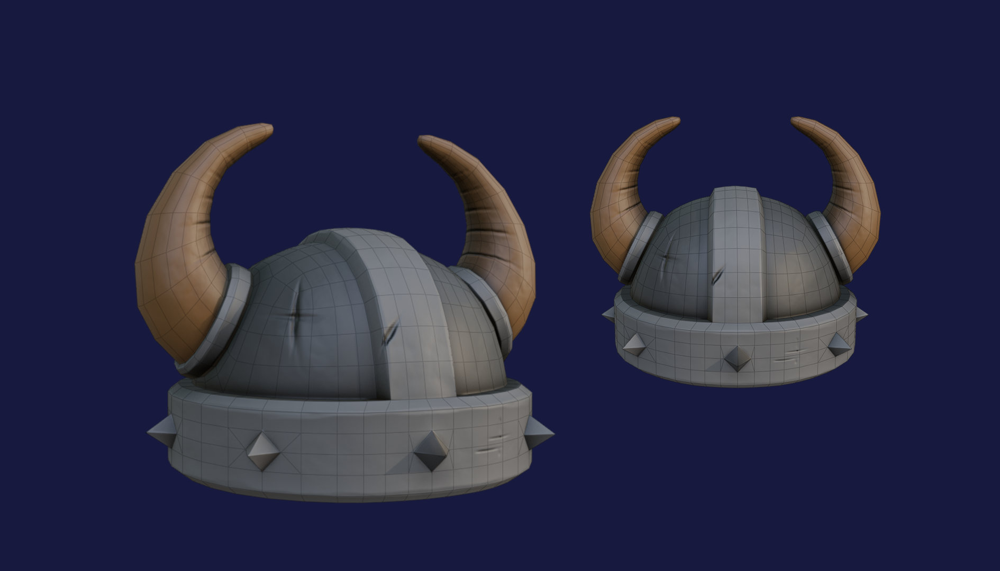
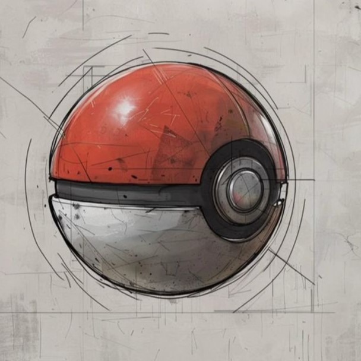

EM BREVEO DESPERTAR DO APRENDIZ
ONLINE · YOUTUBE · CERCA DE 10 HORAS
Uma porta de entrada para quem quer começar a criar no Blender. Você aprende a se orientar na interface e conhece, na prática, os primeiros passos de modelagem, escultura, textura, rig e animação. Ao final, pode escolher qual caminho quer explorar mais a fundo.